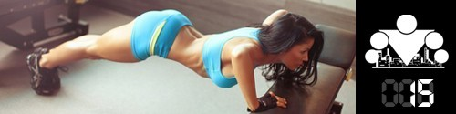

Вторая неделя нашей образовательной программы осталась позади, а вместе с ней мы закончили обязательную составляющую БАЗОВОГО блока. Впереди вас ждут ещё 36 интересных и полезных инфо-постов более общего характера, ну а пока я предлагаю подвести итоги минувших 7 дней:
День 8. Баланс калорий (сколько нужно калорий в день?)
День 9. Белки, Жиры и Углеводы (ценность Белков)
День 10. Белки, Жиры и Углеводы (ценность Жиров)
День 11. Белки, Жиры и Углеводы (ценность Углеводов)
День 12. Гликемический индекс продуктов
День 13. Пятнашки: здоровое питание
День 14. Правильный образ жизни, а не диета
Теперь возвращаемся к делу. И первое о чём я хотел бы вам рассказать - это о правильном дыхании во время выполнения упражнений. Конечно, в инфо-постах о
подтягиваниях, отжиманиях
и
приседаниях мы уже поднимали этот вопрос, но по нашему опыту его стоит выделить в отдельный инфо-пост. Для лучшего усвоения информации, так сказать.
Правильное дыхание
О том, что нужно правильно дышать во время тренировки знают наверное все. К сожалению, очень многие люди, особенно новички, когда приступают к своим тренировкам сразу же об этом забывают
и начинают дышать как придётся, а то и вовсе задерживают дыхание во время нагрузки (что не есть хорошо). В тоже время именно правильное дыхание, синхронизированное с процессом выполнения упражнений,
позволит значительно повысить эффективность ваших тренировок, а так же улучшить ваши результаты.
В общем виде правила дыхания при выполнении упражнений выглядят следующим образом:
[1] перед началом выполнения упражнения (и каждого повторения в нём) нужно вдохнуть;
[2] позитивная фаза упражнения должна выполняться на выдохе;
[3] негативная фаза упражнения должна выполняться на вдохе;
Пример. Подтягивания. Вы подходите к турнику, кладете руки на перекладину. Делаете вдох. Начинаете сокращать руки (подтягивая тело вверх) и одновременно начинаете выдыхать.
В идеале в верхней точке вы должны полностью выдохнуть весь воздух. Затем, начинаете распрямлять руки и вдыхать воздух, опуская тело вниз. В нижней точке вдохнуть нужный вам объём воздуха.
На счет глубины дыхания мне сложно что-либо сказать, она должна быть комфортной, и она, очевидно, зависит от темпа выполнения (об этом ещё будет отдельный инфо-пост).
То есть, чем быстрее темп, тем меньший объём воздуха вы будете вдыхать/выдыхать (чтобы успевать делать упражнения), чем медленнее, тем, наоборот, больший.
Кстати, по поводу рекомендации дышать через нос. Для этого есть 2 основных причины:
- во-первых, при таком способе происходит обогрев потока холодного воздуха, без чего мозг человека и его носоглотка подвергались бы чрезмерному охлаждению, и сохранение этого тёплого воздуха (актуально в холодную пору года);
- во-вторых, с помощью слизистой оболочки и волосков происходит фильтрация воздуха с целью отсеивания пыли и микробов;
В тоже время если делать выдох ртом, то таким образом можно быстрее выпустить воздух.
Следует отметить также и то, что правильное дыхание зависит и от того, к какому типу относятся упражнения, которые вы выполняете.
Силовые упражнения. Которые мы и делаем в рамках программы 100 дневный воркаут.
Выдох рекомендуется делать в момент наибольшего мышечного усилия, а вдох, когда напряжение мышц наименьшее.
Всегда помните, что во время тренировки нельзя задерживать дыхание. Дело в том, что во время вдоха усиливается внутрибрюшное и артериальное давление и увеличивается нагрузка на сердечно-сосудистую систему.
Добавлять к этому еще и нагрузку от выполняемого движения явно не стоит. К тому же на выдохе легче концентрировать усилие.
Поэтому если вы заметили, что задерживаете дыхание, это значит, что выполняемое упражнение для вас слишком тяжело, и стоит ослабить интенсивность нагрузки.
Упражнения на развитие гибкости. К этой группе упражнений относятся различные наклоны, повороты, махи, круговые движения руками и ногами, в общем всё то, что обычно включают в разминку.
Так же сюда относятся и упражнения, направленные на развития гибности.
Расслабление (растяжение) мышц производится на выдохе, соответственно возвращение в исходное положение на вдохе.
Упражнения циклического характера. Ходьба, бег, езда на велосипеде, плавание и т.д. Все это упражнения, относящиеся к аэробным.
В таких упражнениях очень важно поймать собственный ритм дыхания, который будет согласовываться с движениями и придерживаться его. Беспорядочное,
с паузами или, напротив, слишком частое дыхание нарушает ритм бега, затрудняет координацию и не обеспечивает достаточной вентиляции легких.
======> День 16. Как научиться подтягиваться с нуля